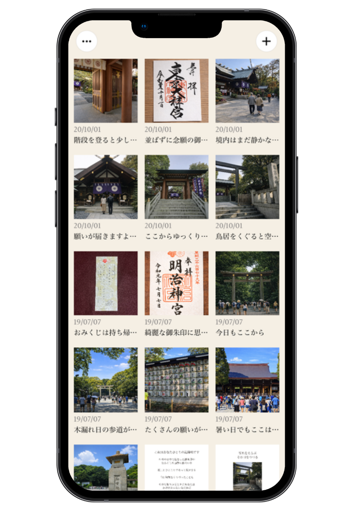

御朱印めぐりから帰ったら
スマホには参道の景色や花手水
帰り道の写真がたくさん
きれいだなと思って
思わずスマホを向けた一枚も
その中にあるはずです
あとで整理しようと思っても
そのままになってしまうことがあります
写真は残っていても
そのとき心が動いた気持ちは
少しずつ薄れてしまうかもしれません
そんな写真を楽しむために
最初からきれいに整理する必要はありません
まずは撮った日を開いてみることから
始めてみませんか
御朱印巡りの写真を見返す、3つの方法
1 お参りした日付から、写真を探す
お参りした日を思い出したら、スマホの写真アプリで、その日付の写真を開いてみます。iPhoneの「写真」アプリなら、日付で写真を探すこともできます。
神社の門を撮ったあとに、道ばたの花やお昼ごはんを撮っているかもしれません。順番に眺めるだけで、その日の寄り道も思い出しやすくなります。
2 また見たい写真に「お気に入り」の目印をつける
もう一度見たい写真があれば、写真アプリの「お気に入り」に登録する方法があります。あとで探すときの目印になるので、すべての写真を整理しなくても大丈夫です。
お参りの写真を何度も見返すようになったら、「御朱印めぐり」などのアルバムを作るのも一案です。お気に入りもアルバムも、必要になったときだけ使えば十分です。
3 写真に写っていないことを、ひとこと残す
ふと目に入った花手水がきれいで、思わずスマホを向ける。そんな一枚にも、写真だけでは残らない、そのときの気持ちがあります。「雨上がりで空気が気持ちよかった」など、心が動いた瞬間を短い言葉で残しておくと、あとから見返したときの手がかりになります。
iPhoneなら、写真の情報にあるキャプション欄に言葉を書き添える方法もあります。長い日記でなくてかまいません。
たとえば、こんなひとこと
花手水の写真 「雨のあとで、色がきれいだった」
参道の木漏れ日 「今日はここを歩いてよかった」
帰り道の喫茶店 「またこの店に寄りたい」
上手に書くより、そのときの自分が思ったままの言葉を。
御朱印帳と一緒に、その日の写真も見返す
御朱印帳には、神社やお寺でいただいた御朱印が残ります。スマホには、同じ日に歩いた道や季節の花、帰り道の寄り道が残ります。
御朱印帳を開くとき、写真も一緒に眺めてみる。どこを訪れたかだけでなく、どんな時間を過ごしたかも思い出せそうです。写真の整理を完成させるより、また開いてみたくなることを大切にしたいですね。
もうひとつの帖という選択肢
スマホの写真アプリだけで十分なら、そのままで大丈夫。もし、お参りの日に思わず撮った写真と、そのときのひとことを、自分だけの一冊のように並べて眺めたくなったら、「わたしのつづり帖｜御朱印」というiPhoneアプリもあります。
御朱印そのものを集めたり管理したりするためのアプリではありません。お参りの日に撮った風景や寄り道の写真を、ひとことと一緒に残し、あとから見返すための小さな帖です。
写真は複数枚まとめて追加でき、日付とともに並びます。登録・ログイン不要、広告なし。記録は端末内に保存され、SNSへの共有機能もありません。

御朱印帳を持って、ちょっとお出かけ。
御朱印帳の使い方から、休日の寄り道、持ち歩くケース、写真と思い出まで。ひと続きの読みもの「御朱印帳のある休日」では、お参りの日を楽しむための小さな工夫と道具を紹介しています。
後半では「わたしのつづり帖｜御朱印」の実際の画面も紹介しています。写真とひとことをどんなふうに残せるのか、画面を見ながら想像してみませんか。
休日の楽しみ方とアプリ画面を見るいただいた御朱印は御朱印帳に。その日に見つけた景色やひとことも、また開いて楽しめるように。